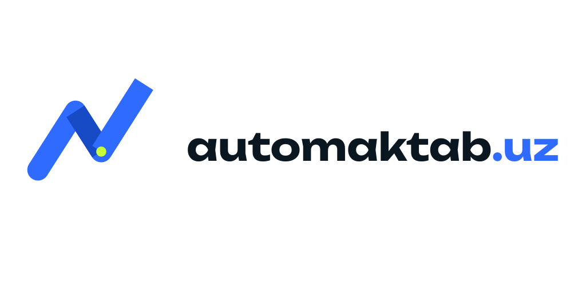
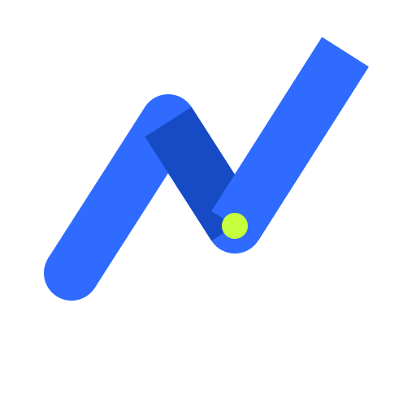

Horizontal masterSVG paths · 1024×512 viewBox
Reference’dagi buklangan lenta ritmi saqlandi. Geometriya mustahkamlandi, fold real kontrast oldi, terminal va signal nuqta esa automaktab.uz uchun xos detalga aylandi.




64 pxAsosiy foydalanish uchun flat ikki-rangli SVG. Gradient, bevel yoki shadow qo‘shilmaydi.
Lime nuqta — rahbarning nazorat nuqtasi. Uni boshqa joyga ko‘chirmang yoki ko‘paytirmang.
Rangli icon — 24 px. 16 px uchun monochrome variant xavfsizroq.